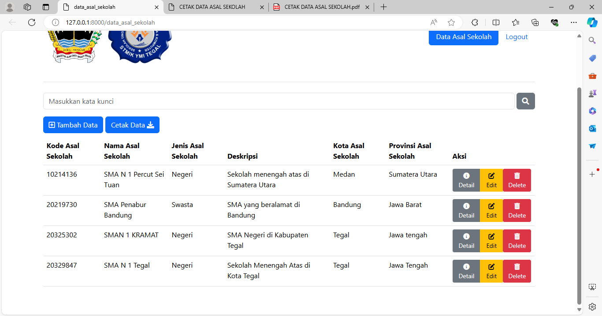
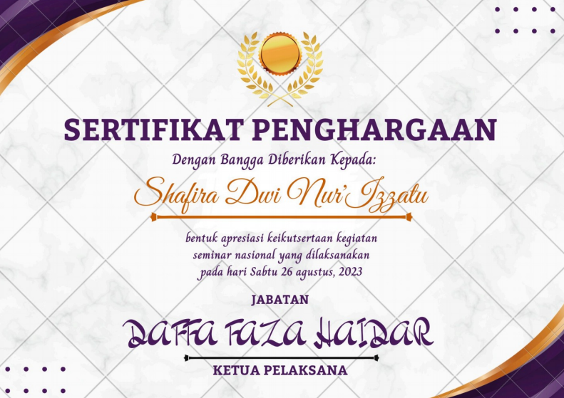

Proyek 1: Pada Semester 4, Saya dan kelompok saya diberi project membuat web pada mata kuliah Pemrograman Web.
Proyek 2: Pada saat liburan semester 3, Saya menjadi panitia Seminar Nasional yang di adakan oleh Bapak DR. H. Abdul Fikri Faqih, MM yang hidariri oleh banyak Mahasiswa di Kota tegal.
